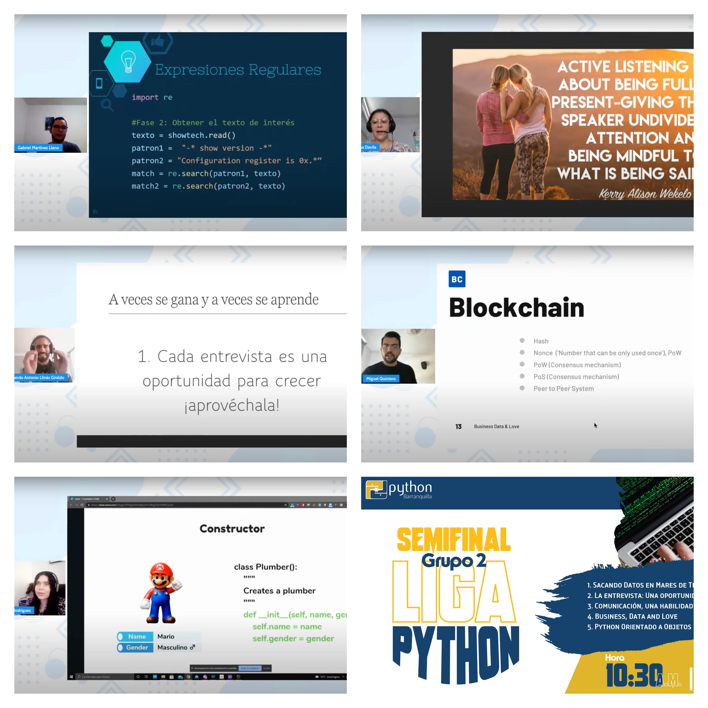

Con la Liga Python ya hemos entregado alrededor de $536,800 COP en premios para los puestos 3er y 4to de cada grupo que compitió en las semifinales 1 y 2 ¡Felicitaciones a las personas ganadoras!
También queremos agradecer a las personas que participaron pero no obtuvieron ningún premio. De nuestra parte tienen el reconocimiento y nuestro agradecimiento por contribuir a la creación de contenido en español sobre tecnología.
Semifinal grupo 1
Al ser la primera vez, este grupo se definió por mantener una mayor discreción en los temas propuestos, sin embargo, a medida que fueron tomando confianza y el público fue realizando preguntas, se generaron conversaciones importantes durante el evento. Vale la pena volver a verla.
Para este partido contamos con las siguientes charlas, las cuales podemos ordenar de acuerdo a su puesto obtenido gracias a las votaciones:
- Rodrigo Tesone - Breves historias de politica y datos.
- Aliexer Mayor - Bitácora de Trading.
- Jorge Aguilar - Anedoctas de Junior. Consejos para empezar con pie derecho en el desarrollo y no fracasar en el intento.
- Ivan Rodríguez - Curiosidades de programar con Django.
- Dario Guzman - ¿Por qué ir async?
¿Quieres revivir la semifinal? Mira nuevamente el video en https://www.youtube.com/watch?v=9fvHu0WceO0
Semifinal grupo 2

Estuvo bastante reñido este grupo por una muy buena calidad en sus charlas, además de temas más audaces dada la experiencia con el primer grupo.
Las personas que participaron, por orden de ganadores, fueron:
- Fernando Llinás - La Entrevista: Una oportunidad para la vida.
- Gabriel Martínez - Sacando datos en mares de textos con Python.
- Miguel Quintero - Business, data and love.
- Vanessa Rodriguez - Python Orientado a Objetos.
- Tatiana Davila - Comunicación: Una habilidad crucial.
Créeme que vale la pena ver nuevamente las charlas. Por acá te dejo el enlace https://www.youtube.com/watch?v=YIv-PrGLoQ4
¿Qué sigue?
Solo falta ver las 4 charlas clasificadas a la final, la cual será el sábado 4 de diciembre a las 10:30am.
El enfrentamiento nos traerá las siguientes presentaciones extendidas:
- Breves historias de politica y datos.
- Bitácora de Trading.
- La Entrevista: Una oportunidad para la vida.
- Sacando datos en mares de textos con Python.
Apoya a tu favorito y participa en comunidad.
Nos vemos en la final